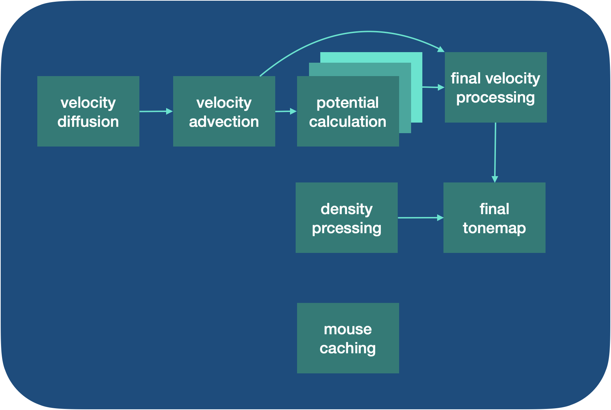
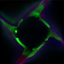
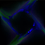
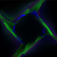
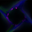
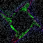
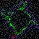
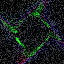
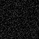

Final Project Report: Navier-Stokes GLSL Fluid Simulation and Deep Learning Application
Praveen Batra, Philippe Hansen-Estruch, Dean Zhang, Anthony Ding
Abstract
In this project, we implemented a GLSL shader pipeline on the staff Vulkan shader graph for rendering fluid dynamics simulations with mouse or programmatic input. Our pipeline used the grid-based approximation to the Navier-Stokes equations outlined in Jos Stam's paper "Real-Time Fluid Dynamics for Games." We also implemented a variational autoencoder (VAE) and MLP dynamics model for next-frame prediction using one of our fluid simulations as training data to see if a deep learning-based approach could learn fluid dynamics. However, we found that the VAE and dynamics model together learned a degenerate latent space, so we had to use an end-to-end technique where the VAE also predicted the next frame. Ultimately, the machine learning technique was limited by a lack of training data and compute time, but we believe it has some potential.
Technical approach
Summary
A 1-2 page summary of your technical approach, techniques used, algorithms implemented, etc. (use references to papers or other resources for further detail). Highlight how your approach varied from the references used (did you implement a subset, or did you change or enhance anything), the unique decisions you made and why.
GLSL shader pipeline
Our shader pipeline was built to emulate the process for simulating fluids described in [1]. Essentially, we tracked three quantities: an array of the current per-pixel, per-color-channel (RGB) fluid density, an array of the current 2D per-pixel velocities, and a 1x1 array of the 2D mouse position. The final shader would just write the densities to the framebuffer as RGB pixels.

A high level diagram of our shader pipeline. An arrow indicates that the output of one shader is sent to the next at the current frame. Each shader also has access to the final velocity ouput, density output, and mouse caching output from the previous timestep. The potential calculation uses three idential shaders in sequence.
To render each frame, we would use the previous mouse value and the current mouse location to determine the mouse's one-frame movement (this was why we had a mouse caching shader). Then, we would use the previous frame's density and velocity, as well as the mouse location and movement, for the following shaders:
The density processing shader would compute the new density value as follows:
Start with the previous density value.
Update the density to be a weighted average of its neighbors' density and its previous value (diffusion step). Notably, while the original paper used a 20-iteration solver to find a stable diffusion, we used an unstable diffusion process because it was faster and did not require multiple shader iterations. We added a decay term to reduce instabillity that will be discussed later.
Move the density in the direction of the velocity field (advection step) by setting a pixel's density to a weighted average of its current (diffused) density and its moved density. The moved density is computed by moving backward in the direction of the velocity field at that pixel, and linearly interpolating to find the average density at that location.
Add density at the current mouse location, with the colors being added changing linearly over time.
Initialize the density if it's the first frame to some fixed value.
Attenuate the density multiplicatively. This step was not in the original paper, but it's helpful to avoid potential instabilities and allow the fluid to disperse over time.
Clamp the density to be between 0 and 1 since that's the range of valid OpenGL channel values.
The velocity shader pipeline would work as follows:
The velocity diffusion shader computes diffusion on the previous velocity. This is the same process as density diffusion.
The velocity advection stage moves the velocity field in the direction of the current velocity. It is also the same as the density field, though velocity is 2D while density is 3D. (Using vectorized math makes this distinction less important.)
The next three stages approximate the potential function for the velocity. In the original paper, 20 iterations of a solver are used to calculate the potential function, which is then used to remove the nonconservative parts of the velocity field. This ensures the velocity field is conservative, which is what we would expect for an incompressible fluid. However, because OpenGL shaders are per-pixel, for each iteration of the solver we need an additional shader, since the 3rd iteration needs access to the results of the 2nd iteration for neighboring pixels, for instance. Adding more stages slowed down our renderer, so we ended up using only 3 stages instead of 20 to compute the potential.
The final velocity processing stage first applies the potential-function based projection to remove nonconservative parts of the velocity.
It then adds velocity at the current mouse location in the direction of the mouse movement from the previous frame to the current frame. Notably, we only used the mouse's movement for velocity updates, not density updates.
Finally, it sets the velocity to 0 if it were the first frame, and it cap svelocity values to be between -10 and 10 to prevent catastrophic results from any potential instability. (We don't decay the velocity, so this could be a concern!)
One other difference from the original paper is that we did not treat boundaries specially, but since the vast majority of pixels are not at the boundary, we did not see this is necessary for achieving a realistic fluid simulation.
Deep learning for next-frame prediction
Summary
On the deep learning side of things, we originally wanted to speed up calculations by training a simple multi layer perceptron (MLP) to learn how to solve the iterative 'potential' calulations much faster. We ran into problems saving data and transfering the learned model from python into C++. Instead, we decided to save image data/renderings from the simulation and attempt to predict future images/renderings based on this data. Essentially, we trained a Variational Auto-Encoder (VAE) to learn a latent space that describes our simulation images. This VAE system was modeled from this paper 'Neural Discrete Representation Learning' by Aaron van den Oord (https://arxiv.org/pdf/1711.00937.pdf) which trains a VQ-VAE for latent space representation of images. From there we would use this latent space to learn a dynamics model to predict future latents which we could then 'decode' into a predicted image which would be the predicted resultant image. This dynamics model was inspired by the paper 'Learning Latent Dynamics for Planning from Pixels' by Danijar Hafner (http://proceedings.mlr.press/v97/hafner19a/hafner19a.pdf).
VAE/Dynamics Model Backgroup and Setup
Simply put, a VAE is a convnet that takes in an image, encodes it to a lower dimension space that should represent it's core and cruicial components of the original image. You can then 'decode' (decoder is also a convnet) this image into the original image. In training, we do exactly this. We input a training image and encode into latent space and then decode into original image space. We then take a loss based on the original input image and the decoded image. This loss can be just the frobenius norm or something more complex to maintain robustness in the latent space. We then backprop through the decoder and encoder to train the system. Ideally, the encoder should learn how to make a meaningful representation for the decoder to decode from. Though sometimes it may turn to a degenerate or useless latent space (we will see this in the first attempt) due to the construction of the setup.
As for the dynamics model, it is a simply MLP network that learns the transitions between latents. Dynamics model learns the 'dynamics' of the system - or how our simulator operates. Since our latents have some predescribed pattern per time step, the dynamics model will attempt to learn this transition via a squared error loss. So in summary, the VAE learns the latent space and the dynamic model learns how connected latents relate in effort to predict the future latents. We can then decode from these predicted future latents to see a predicted next step image.
We used this codebase for VAE models. https://github.com/AntixK/PyTorch-VAE
Training Data
The training data we gathered was just running the simulator multiple times and gaining essentially 'long' trajectories of renders where each adjacent image is basically a single step.
We can then relate the two images and used them to train the methods. We tried two which we will describe below.
VAE and dynamics MLP
In this method, we simply trained the VAE on each individual data point and built a latent space from this. This latent space was not very robust or effective because it mapped to a very similar cluster of points for each image. When training the dynamics model, there wasn't a descripitive enough latent space to use so this method failed to work at all. It just outputted black images rather than concrete predictions. This setup was very similar to the VQ-VAE paper and learning latent dynamics paper, we implemented basically a subset of what this paper mentioned. As the latter paper learned a dynamics model from an already learned latent space, but I assume their latent space was much more robust and helpful.
We believe the issue was a result of the training of the latent space not being robust enough. If we force the system to be end-to-end, the dynamics model/VAE might be forced to produce a better solution that we can then use.
End-to-end VAE
We decided to change the process of training the VAE into a new setup that differs from the reference papers/material. Instead we will combine both the VAE and the dynamics model together and train them end-to-end. Firstly we encode, then predict the next latent, and then decode and take a reconstructive loss on this. This setup forces our latent space to be more robust and useful for future predictions. Although, it took a very long time to train till proper convergence. This process borrows concepts from the two papers listed above, but makes the fundemental change that we train the dynamics model in unison with the VAE to target our objective. This system worked ok as it predicted next step renders pretty well. Though for longer than one step predictions or for when the shape/color of the simulation changed - our dynamics model could not predict those very well.
Problems encountered
Initially, we tried to implement a fluid simulator based on [4], which tracked individual particles. However, the issue we ran into was that OpenGL shaders are naturally built around per-pixel processing rather than per-particle processing. We tried embedding particle information in the early pixels, and while this worked, it created odd rendering artifacts, possibly due to multiple shader pixels overwriting the same particle. While we could have solved this problem with a separate lower-dimensionality texture for the particles, we chose instead to follow the explicitly grid-based approach of [1], which worked naturally with per-pixel shaders.
On the ML side of things, the main issue was getting convergence and trying to avoid useless latent spaces. Our first method did not work at all in getting usefull predictions due to the setup of the problem. We changed training methods and achieved better results. As for method 2, it would not predict future colors or shapes very well - it also could not predict multi step renders very well either. This would probably require some addition of a more complex model and recurrence in our setup. Though these are common problems in ML.
Here is a video of one of our early attempts to render by embedding particle positions in pixel data. There is visible artifacting that we were not able to resolve. Moving to a grid-based fluid simulation resolved this issue.
Lessons learned
From this project, we learned that shader-based simulations are easiest when they are pixel-based and rely on simple approximations that ideally can work if each pixel only has access to the previous frame and is computed separately. Most of the performance cost in our shader came when we had to duplicate the potential calculation step because of its reliance on iterative updates across the entire image, but ultimately by using a less compute-intenstive approach we could easily achieve realtime performance. We also learned a lot on deep learning models and how fragile they are. Simple things like degenerate solutions or bad data can through a whole deep net off and make it just a useless connection of weights and biases. Though, more importantly we learned how amazing and beautiful deep nets can be when they work. They can learn such complex relationships and even predict some basic future images like our simulator! Ideally, it would act as the simulator for us but just to see it working barely is very nice.
Results
Your final images, animations, video of your system (whichever is relevant). You can include results that you think show off what you built but that you did not have time to go over on presentation day.
GLSL shaders
Circle
Here is a simple example where we have a programmatic simulation of mouse input based on the current frame. The virtual "mouse" follows a circular pattern, adding density and velocity to the simulation. Which color density it's adding changes over time.
Heart
Here, we used a different parametric equation for the virtual mouse to trace out a heart shape. As a note, the reason we had to record the renders with a camera instead of a screen recording was due to an issue with Linux graphic drivers that cause the simulation to lag and render incorrectly if we used screen recording. We apologize for the reduced quality of the video.
Figure 8
A third shape we tried tracing is the figure 8.
Figure 8 with variable dynamics
Here, we tried something different: setting different parameters (such as diffusion and decay rates) for the different colors. This leads to a noticeable difference between how the red, green, and blue fluids behave.
Circle with variable dynamics
We also tried rendering the circle with the same color-dependent parameters as above.
Deep learning
Here are a subset of the training images, used - they will also act as 'truth' in the next set of results.
Each of these training images has an image a time step before it, we will input this prior image into the encoder -> latent -> dynamics model -> decoder and attempt to predict this truth image. The closer we are to truth, the better. For the last image, the original input was 5 steps away - so we chained the dynamics model to predict multiple latents (5 in this case). This was to test robustness of multi step predictions.

First Truth

Second Truth

Third Truth
Fourth Truth

Fifth Truth
VAE and MLP dynamics model
Here are the predictions of the first method. Notice how it is all black images. The latent space was very small and the VAE mapped everything to a similar location meaning the dynamics model and decoder had little to work with - resulting in the black images we see. Multi step prediction also did not work very well either (last picture).

First Prediction Method One
Second Prediction
Third Prediction
Fourth Prediction
Multi Step Prediction from Starting Image
End-to-end VAE
For the final set of predictions, notice now the system works pretty well. There is a lot of noise and some cases of wrong colors/shapes. Also for multi step predicition, it just didn't work at all. Generally the dynamics model had a tough time predicting changes in color and shape, but did ok at one step predictions with minor changes. Notice how sometimes, the output image is just the same stuck image with the red outline at the end. This could also be the latent space freezing up and not being useful, but at least it isnt outputting black images.

First Prediction Method Two
Second Prediction

Third Prediction

Fourth Prediction

Multi Step Prediction from Starting Image
References
[1] Jos Stam, "Real Time Fluid Dynamics for Games" (link)